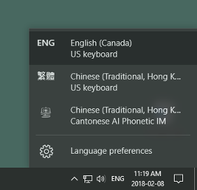
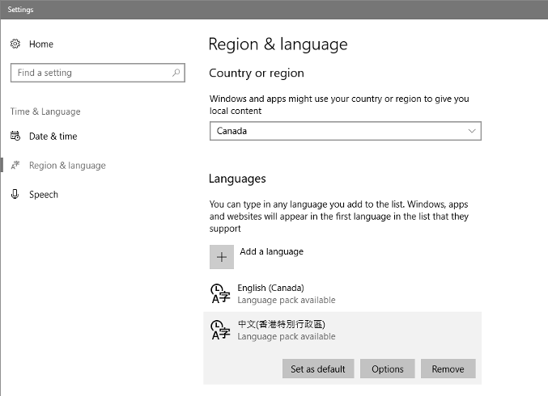
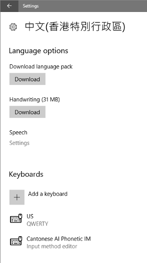
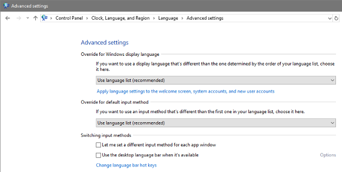
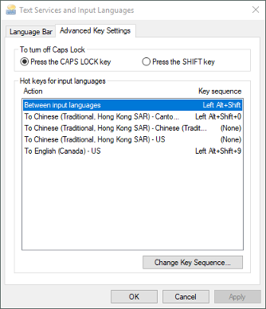
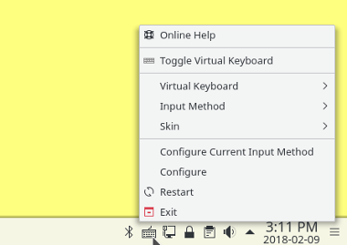
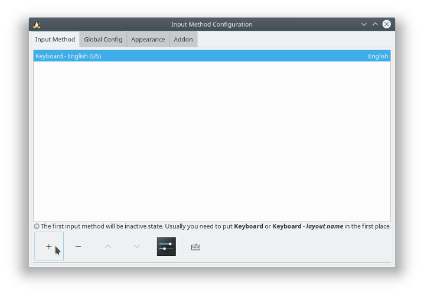
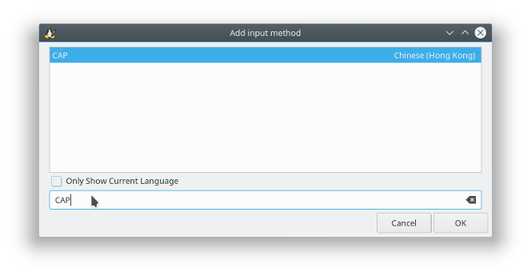
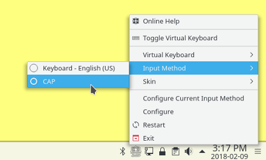

Here’s a brand new release of my Cantonese Artificially-intelligent Phonetic (CAP) Input Method for Windows 10! There’s also a new Fcitx version for Linux, developed and tested on the latest KDE Neon, and should be compatible with other Linux distributions such as Kubuntu, Ubuntu, and Debian. Finally there’s a Mac version built for macOS Sierra.
Download the version of the CAP input method for your platform.
| Version | Download Location | MD5 Checksum |
|---|---|---|
| Windows 10 (64-bit) | CAPInstallerDebug.msi |
92551fe48c0ed033f81c75d5ccb2791d |
| Linux (Fcitx) | fcitx-cap_1.0.0_amd64.deb |
976cf7803abe9b6f0669e3623a1ac58d |
| macOS Sierra | Chinese - Cantonese AI Phonetic IM.zip |
23f31fde88799ad780d06dac3aa1a316 |
When you download one of these files, Google Drive (where they are stored) will warn you that it can’t scan the file for viruses because of (large) file size. Each file is built on my computers, and uploaded directly to Google Drive, and therefore should be safe. If you feel the need to, check the downloaded file’s MD5 checksum before installing. The additionally cautious can also scan with whatever anti-virus tools on their computers. To proceed when prompted by Google Drive, click Download anyway. Since the macOS package is compressed into a .zip file, Google Drive tries to be helpful and lets you view its contents. You can and should instead download the entire .zip file by clicking the downward pointing arrow icon at the upper-right corner of your browser window.
To install the Windows 10 version, download and double-click on the CAPInstallerDebug.msi file and follow the directions.
When installed, CAP appears as the entry Chinese (Traditional, Hong Kong) Cantonese AI Phonetic IM in the Windows 10 “input indicator” menu.

You can also verify that CAP has been installed by opening the Region & Language Settings page and clicking the Options button under 中文(香港特別行政區) in the Languages section.

Cantonese AI Phonetic IM should be listed as one of the Keyboards.

The keyboard shortcut for switching language is Shift-Alt. That for switching keyboard within the same language is Shift-Control.
You can also configure a keyboard shortcut to immediately activate a specific input method through the Control Panel->Clock, Language, and Region->Language->Advanced settings page, where you can click Change language bar hot keys.

Hot keys for input languages can then be set in the Text Services and Input Languages - Advanced Key Settings window.

Windows only gives you a limited set of choices to use as shortcut keys. For more flexibility, consider using AutoHotkey.
Additional information on the use of Chinese input methods on Windows 10 can be found on the Pinyin Joe website. You can also Get the old language indicator and language bar in Windows 10. Good information is sadly surprisingly hard to find.
CAP IM for Windows 10 works very much like other versions of CAP. See the article CAP — a Cantonese Artificially-intelligent Phonetic Input Method, for more information. In CAP IM for Windows 10, however, the key combinations for moving the cursor one character, one word, and all the way to the beginning or end of the conversion buffer are left or right arrow, control-left or right arrow, and shift-left or right arrow, respectively.
By default CAP IM for Windows 10 uses Sidney Lau romanization and outputs traditional Chinese characters. Change the value of Romanization to JyutPing in the file %PROGRAMFILES%\Sixth Happiness\CAP\ProgramConstants.plist to use Jyutping romanization. Change the value of ConvertTraditionalToSimplified to true in that file to output simplified Chinese characters.
This version of CAP has been developed and tested on my Windows 10 desktop PC. Its implementation is based on Microsoft’s current Input Method Editor (IME) sample (which is horrendously conceived and written, but that’s a story for another time). It should support all Windows desktop and App Store (or Metro) applications. Unfortunately very old applications (such as Notepad) may exhibit GUI glitches when used with CAP. This doesn’t seem to be a problem I can fix because Microsoft’s sample IME shows the same glitches. Fortunately there are usually modern alternatives to these older applications.
I currently don’t have a Windows 10 tablet and don’t plan on getting one very soon. This implementation of CAP assumes a PC with a hardware keyboard. It will probably not work very well or at all on a PC with only a touch screen.
The Fcitx version of CAP can be installed on Debian-based Linux distributions by downloading and opening the file fcitx-cap_1.0.0_amd64.deb. Doing so should install CAP together with all the packages on which it depends. The configuration and usage of Fcitx vary among Linux distributions. Therefore please consult the documentation and user forums for your Linux distribution for this information.
Generally CAP needs to be added to the list of input methods used by Fcitx. Right click on the Fcitx (keyboard) icon in the system tray and choose the menu item Configure.

In the Input Method Configuration panel that opens, add an input method by clicking on the button with the “+” sign.

In the Add input method panel, make sure that the option Only Show Current Language is deselected and type CAP into the search field. Then select CAP - Chinese (Hong Kong) and click OK.

CAP should now be listed as one of the choices of input methods in the Fcitx menu.

The usage of the Fcitx version of CAP should be very similar to the IBus version (described in the original CAP article).
To install the macOS version, download the file Chinese - Cantonese AI Phonetic IM.zip and follow the same instructions for the previous version.
For detail CAP licensing information, read the file Chinese - Cantonese AI Phonetic IM.app/Contents/Resources/LICENSE within the Mac OS X application bundle. To summarize:
You can only use it for personal and non-commercial purposes. The and in the previous sentence is a logical conjunction, so no site installation at any type of organizations.
You may not redistribute it. I’m the only person in the world who can distribute this software.
I’m not liable for any damages it may cause (although I don’t intend nor expect it to cause any).
Again, I don’t really have much interest or sufficient time and resources to provide “user support” for CAP. So please please please use it only if you know enough about Mac OS X, Linux, or Windows to solve most problems on your own. Don’t be surprised if I don’t reply to your Email containing questions that I think can be answered by a little experimentation. Thank you for your understanding. Otherwise, have fun with it!
Category: Programming